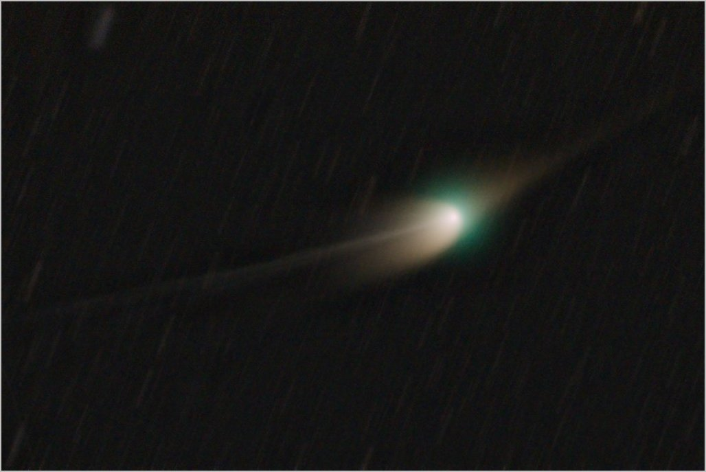

"What we need is Star Peace not Star Wars" ~ Mikhail Gorbachev

Comet C/2022 is a rare visitor, the last time it was close to Earth was 50,000 years ago. The tails are a little unusual, the one on the left is the ion tail, on the right is the dust tail. Each tail points in a slightly different direction, because of our location relative to the comet they appear to point in opposite directions. Looking carefully at the ion tail you can see slight "kinks" these are thought to be due to sunspot activity, the sun is very active just now with numerous sunspots